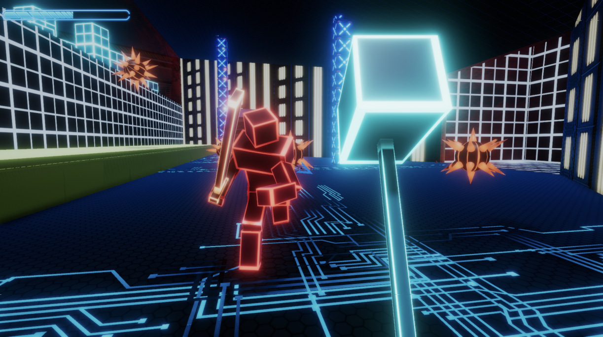

Neon Hammer
Neon Hammer is a fast paced action game where you use your hammer combined with directional attacks and movement to defeat enemies.
This game was created by myself and four others over a five week span as our final project for EECS 494 at the Universty of Michigan. We also worked with a music composition student who made the soundtrack for the game. Due to the larger scale of this project, I gained a large amount of experience in making and designing games. Some of the major components I worked on were the directional attack input system, creaion of 3D models, and attack and animation systems for the swordsman enemies. I made the 3D models in blender and rigged them so they could be used with animations I downloaded from Mixamo.
More info, download links, and a trailer can be found on the itch.io page, linked below.
View on Itch.io